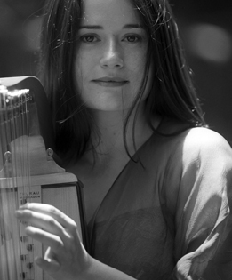

LA VEU DE L'ARPA
Intèrprets:
Arianna Savall
Veu, arpa medieval i arpa triple
Programa:
L'Arianna és cantant, arpista i compositora amb una llarga experiència que li ve ja de tradició familiar a
la qual s'hi han afegit estudis a Basilea i a Catalunya, entre d'altres. El seu programa La veu de l'arpa
és el seu homenatge especial a aquesta rica trajectòria, fent honor a la veu, tant la pròpia com la del
seu instrument.
Obres:
- Cançons sefardís i cants a la Verge (S. XIV).
- L'Arpa de Ludovico (S.XVI).
- Les danses al nou i l'antic món (S. XVII).